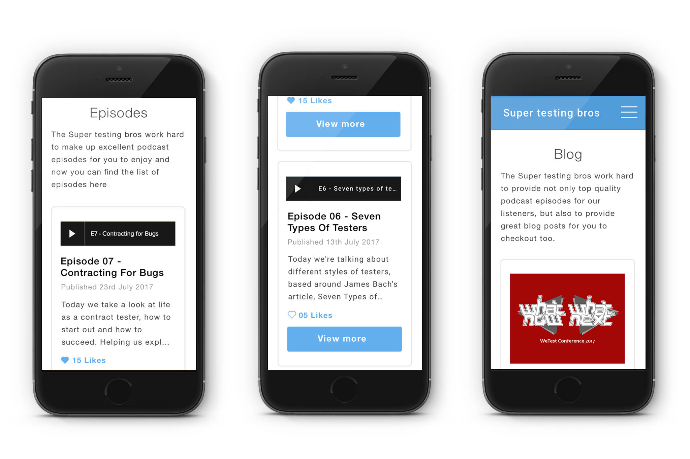
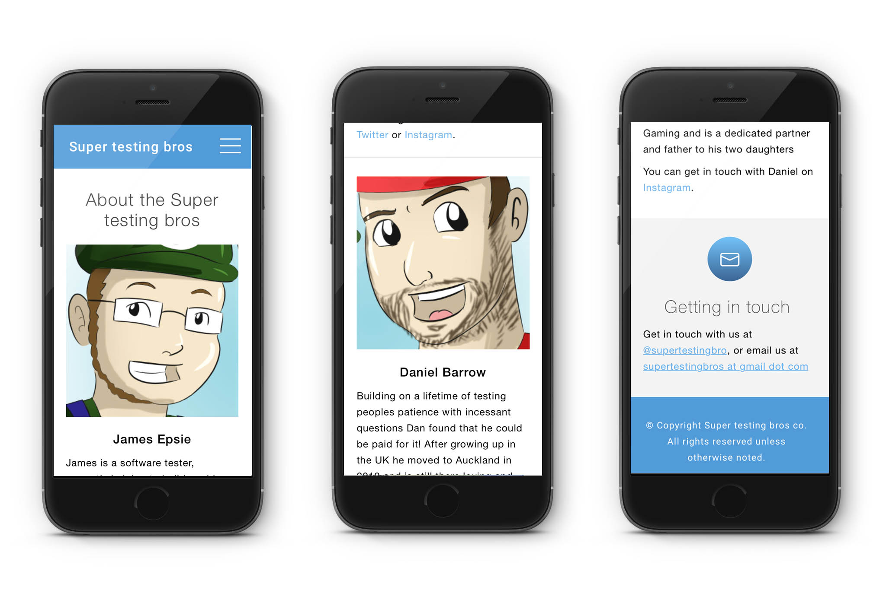
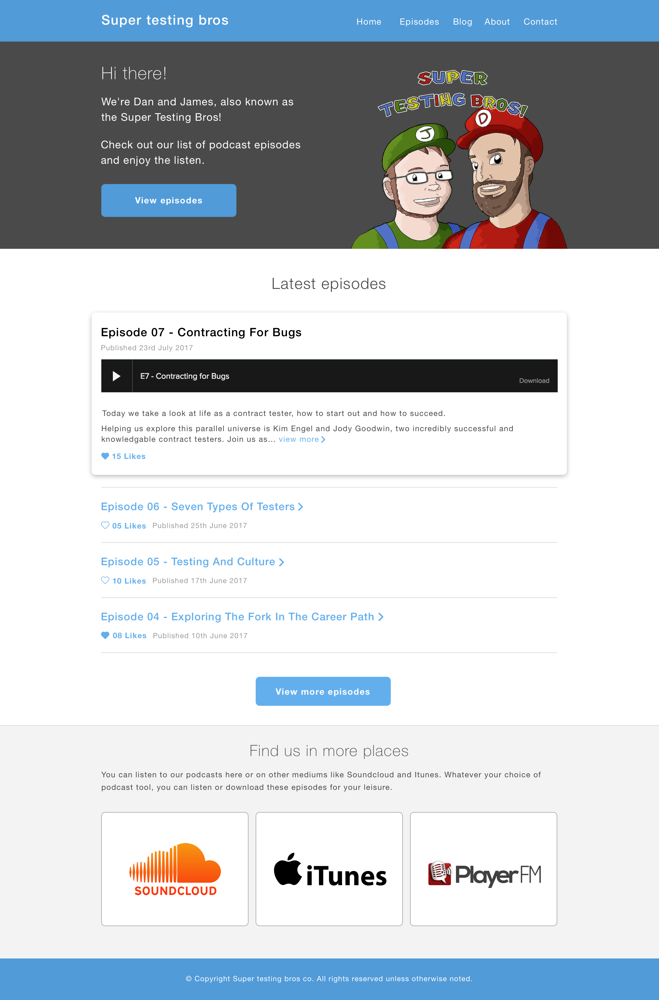

Super Testing Bros Website Design:
Super testing bros is a podcast that host discussions and talks that focus on Quality Assurance, Testing, UX and Software Engineering. I was hired on as a freelancer to do the following:
- Provide a visually consistent experience for users
- Design a clearer journey for users to navigate the site
- Research into a platform for easier maintenance for the long term future
- Improve the Information Architecture
The biggest challenge:
Like all kinds of websites, each website comes with its own set of unique challenges. The biggest challenge to this website project was designing a suitable navigation for users.
As the amount of podcast episodes on a podcast site are expected to grow rather than shrink, it was important to ensure users can easily tell what episode they are on and that they feel they can navigate to the next episode easily with the least amount of maunal thinking possible.
Benchmarking:
To help me solve this user journey and navigation challenge, I researched and benchmarked design trends on existing podcast websites like Design Life FM and Overtime to help influence my website journey and design.
From this research, the most common patterns found included:
- Usage of pagination on the episodes list to help reduce overloading the user with too many options
- Displaying the latest episodes first to ensure users do not miss out on fresh content.
- Allowing the user to rate whether they like the episode or not
Establishing design consistency:
At the time, the team of the existing Super Testing Bros website did not have an established styleguide or clear design pattern library to help keep consistency for their website.
Alongside my goals to ensure the websites journey was simple and visually consistent, I produced a pattern library for the team to utilise to ensure that the sites design remains consistent and that there is a source of truth if anyone in the team is unsure what designs to use.
Result:
The final design was reviewed by the team at Super Testing Bros and the design exceeded the clients expectations. The website is currently in the process of being developed on the Squarespace platform.
